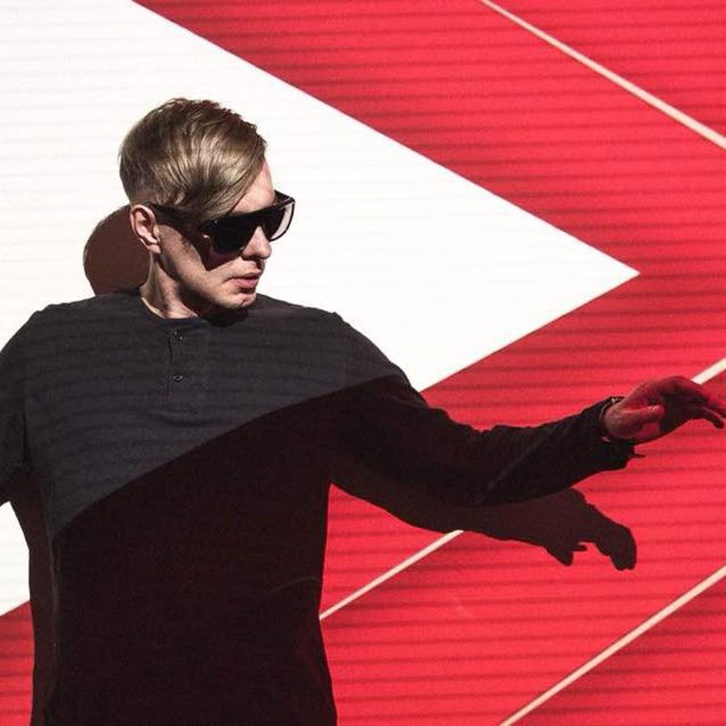

Electro Renegade Proxy Returns With a Tech-Infused Dose of “Afterburner”


For more than a decade, Russian producer Proxy has been one of the defining names when it comes to in-your-face dancefloor electro. Micro scenes have come and gone, but Proxy has outlived them all and continued to slam it out with few reservations. His new three-track Language Barrier EP, due on Friday, shows that’s not about to change anytime soon, either.
We’ve got the EP’s final cut, “Afterburner,” on preview today, and it’s filled with Proxy’s trademark electro noise and synthy bleeps—except more so than usual. Its techy grooves, rubbery basslines, jostling drums, and warrior-cry vocal samples are particularly bouncing here, in a fashion that would slot neatly into a Claude VonStroke set. It’s not surprising, then, to discover the EP is dropping on the beloved This Ain’t Bristol stable, a label that has—at least in some circles—been lovingly described as the “Dirtybird of Europe,” yet with a slant of good-vibe house that is way ahead of its time.
Available May 11 via This Ain’t Bristol.
Buy Proxy’s Language Barrier EP here.
Follow Proxy on Facebook | Twitter | SoundCloud
Follow This Ain’t Bristol on Facebook | Twitter | SoundCloud